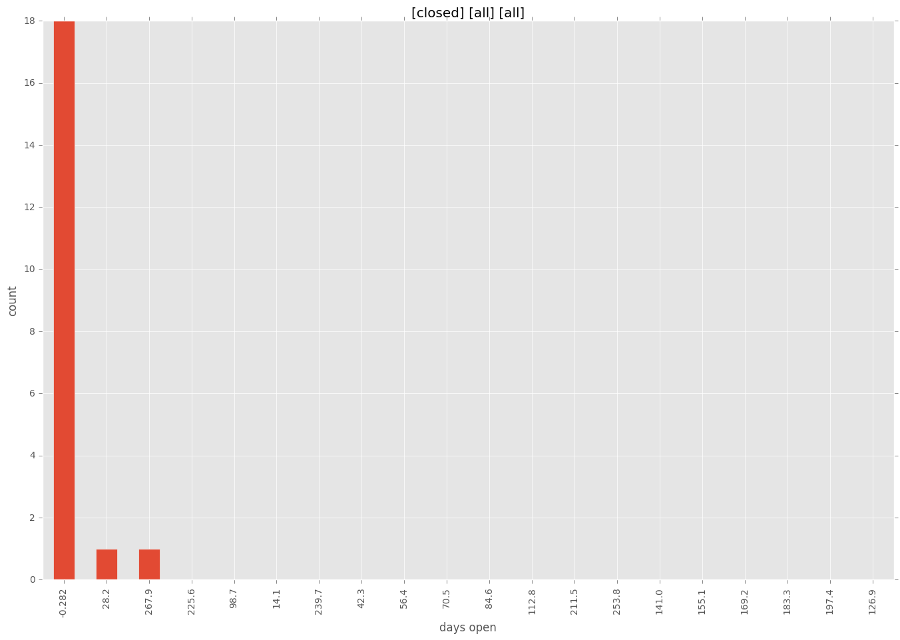

total issue counts
: 1
pullrequest: 13
docs pull request: 2
bugfix pull request: 9
feature idea: 7
issue: 13
new plugin: 1
bug report: 6
issue history
days open by issue type
all: count: 32
all: std: 49.9036167802
all: min: 0
all: max: 282
all: median: 0.0
all: mean: 10.875
pullrequest: count: 0
pullrequest: std: nan
pullrequest: min: nan
pullrequest: max: nan
pullrequest: median: nan
pullrequest: mean: nan
docs pull request: count: 4
docs pull request: std: 0.57735026919
docs pull request: min: 0
docs pull request: max: 1
docs pull request: median: 0.5
docs pull request: mean: 0.5
bugfix pull request: count: 18
bugfix pull request: std: 3.23380833382
bugfix pull request: min: 0
bugfix pull request: max: 10
bugfix pull request: median: 0.0
bugfix pull request: mean: 1.11111111111
feature idea: count: 2
feature idea: std: 197.282791951
feature idea: min: 3
feature idea: max: 282
feature idea: median: 142.5
feature idea: mean: 142.5
issue: count: 0
issue: std: nan
issue: min: nan
issue: max: nan
issue: median: nan
issue: mean: nan
new plugin: count: 2
new plugin: std: 0.0
new plugin: min: 0
new plugin: max: 0
new plugin: median: 0.0
new plugin: mean: 0.0
bug report: count: 5
bug report: std: 15.1228304229
bug report: min: 0
bug report: max: 35
bug report: median: 1.0
bug report: mean: 8.2
closures grouped by total days open
